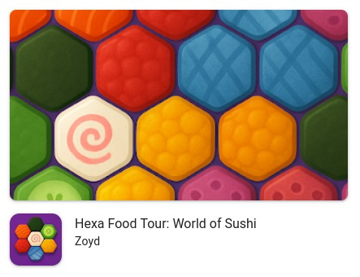
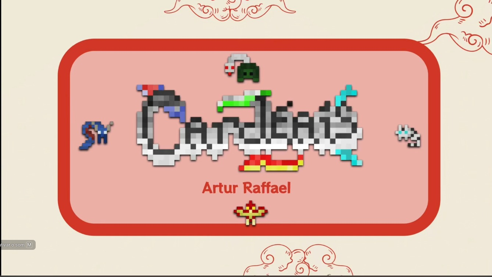

Artur Raffael
tucoff
Graphics Programmer | Unity Developer | Researcher
Currently at Zoyd Games and Abdu Labs.
Former Somos Cordel.
Researcher at LACIQ (CIn UFPE) interested in Quantum Computing applied to Graphics Engines.
In Development & Research (Thesis)
TCC
Bending the Ray (Thesis)
Visual simulation of spacetime distortions applied to Ray Tracing.
C++Ray TracingPhysics
In Progress...
ENG
Fight Engine in Vulkan
Fighting game engine built from scratch using Vulkan API.
C++VulkanEngine Dev
In Progress...
DEV
The Tower by The Brothers Eye
Original game project with focus on narrative and unique storytelling.
Game DesignNarrative
In Progress...
Games & Projects





![Arokin: Game title screen with African-inspired aesthetic using earthy tones of orange and brown. The background is vibrant orange with geometric triangular patterns in dark brown on the sides. A large Baobab-like tree with bare thin branches is drawn in brown in the center. The words 'AROKIN' in large black font and 'DESVENDANDO REINOS' in thinner white font are centered over the tree trunk. Below is a large oval button with yellow borders and light beige-yellow fill containing the word 'Início' in black, indicating the game's start point.](assets/Arokin.png)
![Detetive Castelo Branco: Top-down perspective pixel art detective game showing an apartment interior. The scene displays sand-colored tiled floor and brown walls with various furniture including a bed and nightstand in the sleeping area, sofa and center tables in the living room, and refrigerator and stove in the kitchen area. A detective character in pixel art wearing a brown hat and coat stands near the kitchen. At the top in red text reads the objective: 'SEARCH FOR THE TABLE WITH THE BADGE AND NOTEBOOK.'](assets/DetetiveCasteloBranco.jpeg)
Detetive Castelo Branco
Investigation prototype.
(Note: AI art used only for prototyping. I'm against commercial use.)
PrototypeInvestigation
View Prototype